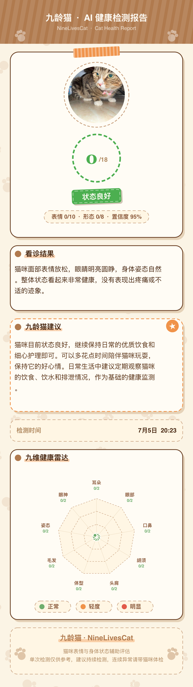
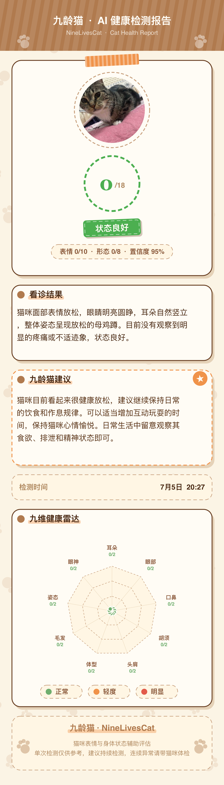
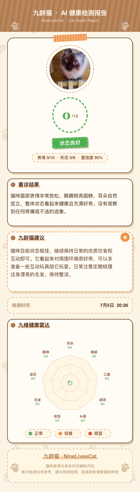
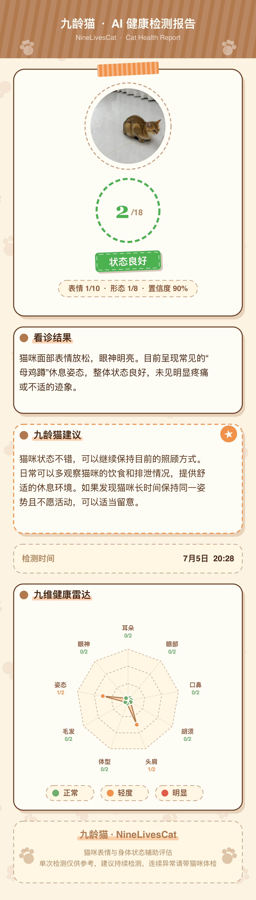
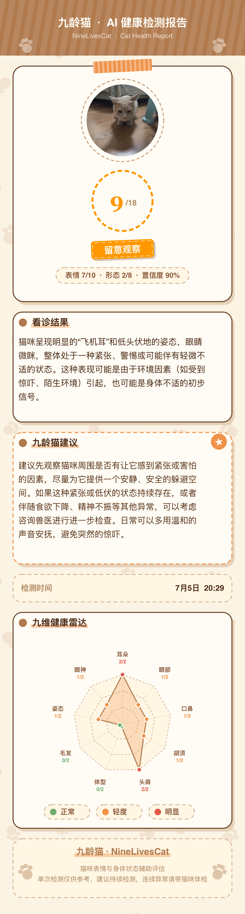
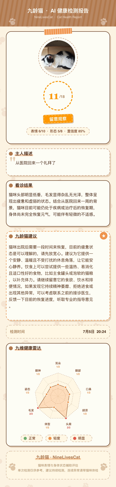

疼痛检测
面部表情分析
对准镜头一拍，AI 秒级分析并给出清晰建议。不能替代兽医，但能让你更早发现异常。
面部表情分析

快速识别原因
消化健康洞察

牙龈牙齿评估
听懂猫咪心声
检测结果仅供参考，不能替代兽医诊断。紧急情况请立即就医。
真实 AI 疼痛检测报告 — 从状态良好到需要留意的案例。点击可查看完整报告。






九龄猫各项检测功能参考了兽医领域常用的评估标准与已发表研究。
Evangelista 等（2019）猫面部表情疼痛量表验证研究。Scientific Reports。
普瑞纳粪便评分表（1–7 级），Nestlé Purina 临床评估工具。
Sparkes 等（2013）猫呕吐障碍文献综述。JFMS。
Logan & Boyce（1994）GI/CI 指数；Reiter & Mendoza（2002）FORL/TR。
Reznikov（2025）FGC2.3 猫叫声分类。ResearchGate 预印本。
九龄猫 App 产品截图。点击可放大查看。
← 左右滑动浏览全部海报 →
三步搞定 — 从拍照到安心，简单快捷。
拍摄猫咪面部、呕吐物、便便、牙齿，或录制一段猫叫。
AI 在几秒内完成识别，生成详细的健康检测报告。
获得清晰的诊断提示和护理建议，随时分享给兽医。
九龄猫将 AI 健康扫描与专属管家对话结合 — 随时提问、完成检测、生成可分享给兽医的健康报告。
涵盖疼痛、呕吐物、便便、牙齿、猫语翻译五项检测。结果仅供参考，不能替代专业兽医诊断。
微信搜索小程序「九龄猫」，或在 App Store 下载 iOS 版。有任何问题，欢迎联系我们。